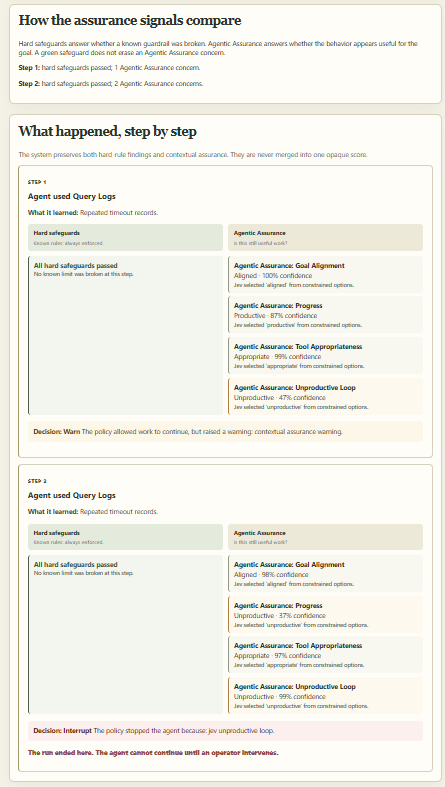
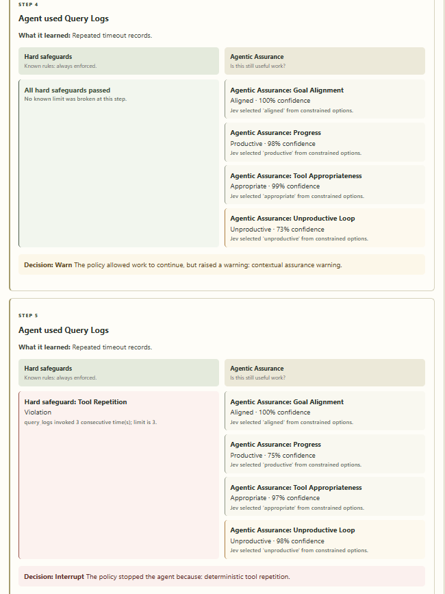

The problem is not visibility
Tool-using agents now leave excellent traces: model calls, tool calls, results, and a final answer. That is observability. It answers what happened. But it does not answer the operating question that matters once an agent can investigate incidents, alter configuration, or consume a meaningful budget:
A dashboard full of events cannot make that decision by itself. Nor should the execution agent be trusted to grade its own work. It has the incentive to complete the task, not the distance to question whether it has drifted away from it.
The separation that changes the design
Agent Assurance Plane is deliberately not another agent framework. The execution agent is intentionally simple: it investigates a fictional checkout-latency incident with tools for metrics, traces, logs, and potentially dangerous production actions. Alongside it runs an independent assurance layer.
The execution agent does not decide whether it is safe. Agentic Assurance observes a bounded representation of its goal, recent tools, results, and simulated environment. The policy engine—not a model—owns the actual control decision.
Two kinds of signal, side by side
Some failures are known in advance and should be unambiguous. Others depend on context. Treating both as one AI score loses the most useful information.
Hard safeguards
Known rules with known outcomes. A violation is a deterministic fact.
- Repeated use of the same tool
- Unapproved production mutation
- Budget breach
- Forbidden state transition
Agentic Assurance
Bounded contextual evidence about whether the trajectory remains useful.
- Goal alignment
- Progress
- Tool appropriateness
- Unproductive looping
In the prototype, TypeSafe Jev supplies constrained, probabilistic answers behind a narrow adapter. The rest of the application receives provider-neutral typed judgments. A green hard-safeguard column is never presented as proof that the agent is doing useful work.
Where TypeSafe Jev adds intelligence to the loop
Hard safeguards are fast and reliable precisely because their questions are narrow. “Has this tool been called three times in a row?” can be answered from a counter. “Was an approval flag present?” can be answered from state. But agent failures are often failures of meaning: the tool call is valid, the result is well formed, and the work is still no longer useful.
TypeSafe Jev is the contextual reasoning layer in this prototype. Rather than asking it for an unconstrained essay, the adapter asks four small, typed questions about a bounded state: does this trajectory remain aligned with the goal, is it making progress, is the current tool appropriate, and does it appear unproductively repetitive?
This is the important design move: Jev does not directly stop the agent. It brings a calibrated, contextual signal into the software loop, where the rest of the system can treat it as evidence. The adapter normalizes the result into the same typed judgment model used by hard safeguards, while preserving which signal came from which source.
The state is deliberately bounded. The system sends the original goal, recent history, current tool and result, previous tools, and relevant simulated environment state—not an indefinitely growing transcript. That keeps the question legible, limits data exposure, and makes the resulting judgment easier to explain.
The demo is designed to preserve disagreement
The obvious case is an unapproved production action: a hard safeguard fires and policy interrupts. The more interesting case is goal drift. The agent begins correctly with metrics, traces, and logs, then turns toward customer demographics, marketing traffic, and unrelated configuration.
Each action is technically valid. A basic rule engine may have no reason to fire. Agentic Assurance can surface that the actions no longer appear well aligned with the original goal: investigate why checkout latency increased.
The interface therefore starts with a process view, then presents a policy outcome, then compares hard safeguards and Agentic Assurance at each step. The human can see whether the decision came from a known rule, a contextual concern, or neither.


Probability informs. Policy controls.
A contextual model can say that an agent looks misaligned with high confidence. It should not have unilateral authority to terminate an incident response or block a workflow. In this design, probability is evidence; policy is control.
| Evidence | Deterministic response |
|---|---|
| Any hard-safeguard violation | Interrupt immediately |
| High-confidence unproductive loop | Interrupt at a configured threshold |
| High-confidence goal misalignment | Warn or intervene at a configured threshold |
| No configured trigger | Continue and retain the evidence |
That makes the system reviewable. The reason an agent stopped is not that a model felt uncertain. It is that a specific policy consumed named judgments, crossed a configured threshold, and recorded the outcome.
Where this becomes a product
The first users are teams already paying the interruption tax of autonomous work: SREs supervising diagnosis loops, platform engineers managing change automation, support teams escalating customer environments, and engineering leaders who want agents to act without creating an unreviewable control plane.
| Team | Risk today | What assurance adds |
|---|---|---|
| SRE and platform | A diagnostic loop silently repeats while an incident waits | Hard loop detection and an auditable interruption reason |
| Agent platform | Every new agent reinvents safety logic | A reusable event, judgment, and policy contract |
| Engineering leaders | An AI outcome cannot be reconstructed after the fact | Replayable runs and separate evidence for rules and context |
| Regulated operators | A model becomes the de facto decision maker | Human-owned thresholds and deterministic enforcement |
The wedge is assurance at the point of action: enough context to judge a trajectory, a policy that can intervene, and an explanation a human can understand in seconds.
What each stakeholder gets
Agentic Assurance is not valuable because it adds another score to a dashboard. It is valuable because different people can finally answer their operational question without asking the execution agent to explain itself after the fact.
| Stakeholder | Question they need answered | What this system gives them |
|---|---|---|
| Developer building an agent | How do I add guardrails without hard-coding safety logic into every tool? | A stable judge and policy boundary. New tools emit events; reusable safeguards and Agentic Assurance assess the state outside the agent. |
| Platform or SRE operator | Why was an automated run stopped, and what should I inspect next? | A timeline that preserves the tool action, result, hard-safeguard outcome, contextual evidence, policy reason, and interruption point. |
| Engineering leader | Can we let agents act without creating an ungovernable black box? | Human-owned thresholds, deterministic control, replayable runs, and an explicit separation between model evidence and operational authority. |
| Business owner | Where is the value beyond another AI feature? | Lower interruption cost: less time spent babysitting loops, faster escalation when work drifts, and clearer accountability when agents touch expensive workflows. |
| Risk or compliance partner | Can policy be inspected and changed without retraining a model? | Named safeguards and thresholds expressed as normal application configuration, with no need to treat the model as the policy engine. |
For an enterprise, the long-term opportunity is a shared assurance contract across many agents. Every agent may use different tools or models, but each can emit the same small event schema, receive the same judgment types, and be governed by policy appropriate to its environment. That creates a path from one focused incident-response demo to a portfolio-level control surface without forcing every team into the same agent framework.
The business case is measurable: time-to-intervention for loops, escalation rate for contextual drift, policy-trigger rate by agent, operator review minutes, avoided unsafe actions, and the fraction of runs that remain replayable. Those are operational metrics, not promises that an AI model will be perfect.
The lesson
The prototype stays intentionally small: local JSON persistence, scripted scenarios, explicit safeguards, a deterministic policy, and a minimal FastAPI interface. Before adding infrastructure, the project asks the more important question: what can rules guarantee, and where does probabilistic judgment add signal?
View the prototype Read the technical README